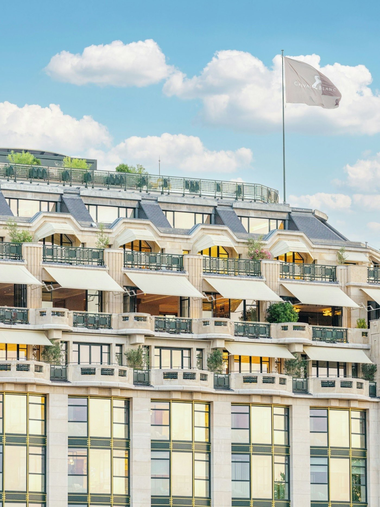
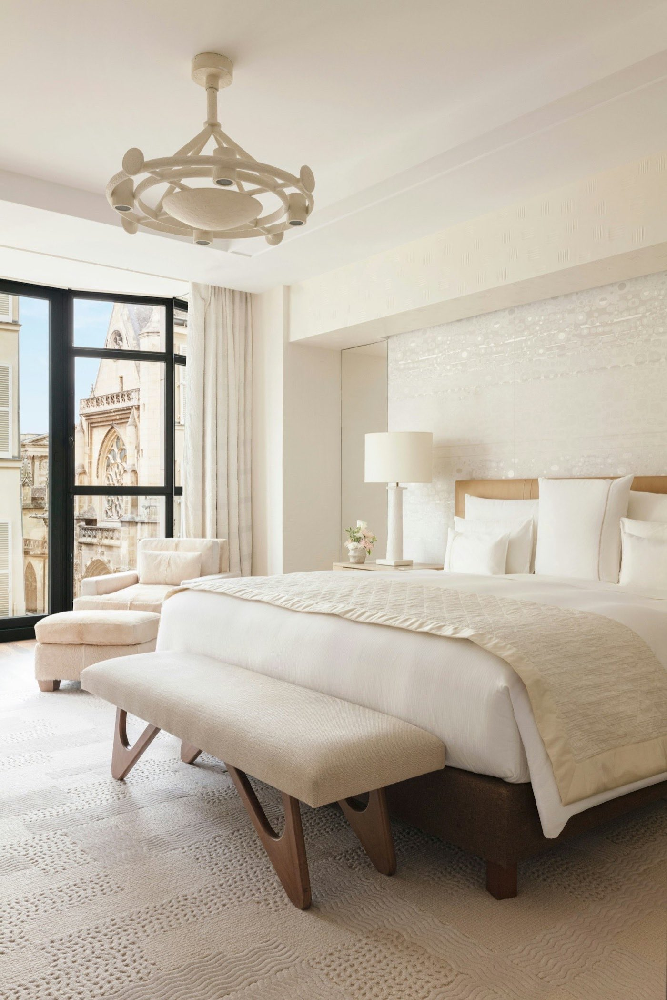

Cheval Blanc Paris : le palace LVMH tient-il ses promesses ?
Le palace le plus spectaculaire de la capitale sur le plan architectural et gastronomique. Mais son rapport prix-expérience reste le talon d'Achille de l'ensemble, et certains détails d'exécution trahissent encore une jeunesse relative face aux institutions centenaires.

La vue sur le Pont-Neuf depuis une suite Seine. Photo : Vincent Leroux / Cheval Blanc Paris.
Verdict LMHS9,0/10 : spectaculaire, mais pas irréprochable
- Ce qui écrase la concurrence, six étoiles Michelin sous un même toit, le Dior Spa et sa piscine de 30 m, et l'intérieur le plus ambitieux signé Peter Marino de la décennie.
- Ce qui coince, une insonorisation défaillante documentée par des dizaines d'avis, et 45 m² pour une chambre d'entrée de gamme à 2 050 € la nuit.
- Le verdict, venez ici pour être ébloui. Allez au Bristol pour vous sentir chez vous.
Ouvert le 7 septembre 2021 dans l'aile Art déco de La Samaritaine, labellisé Palace par Atout France le 2 juin 2026. 72 clés, quatre restaurants (dont trois étoilés) et une terrasse estivale, un spa Dior. Score global : 9,0/10, moyenne simple de nos cinq axes, détaillée plus bas.
Cheval Blanc Paris en un coup d'œil
| Critère | Détail |
|---|---|
| Adresse | 8 quai du Louvre, 75001 Paris (métro Louvre-Rivoli, ligne 1) |
| Groupe | LVMH Hotel Management (collection Cheval Blanc) |
| Ouverture | 7 septembre 2021 |
| Label Palace | Obtenu le 2 juin 2026 (Atout France) |
| Chambres & suites | 72 clés, 26 chambres, 46 suites |
| Entrée de gamme, basse saison | 2 050 – 2 100 €/nuit (novembre-janvier) |
| Entrée de gamme, haute saison | 2 127 – 2 400 €/nuit (juin-septembre) |
| Restaurants étoilés | 3, Plénitude (3★), Hakuba (2★), Le Tout-Paris (1★) |
| Spa | Dior Spa Cheval Blanc Paris, piscine de 30 m |
| Score fiche LMHS | 9,0/10 |
Le bâtiment est classé monument historique. L'aile Art déco (1925-1928) a été conçue par l'architecte Henri Sauvage, restaurée en façade par Édouard François, et entièrement redessinée à l'intérieur par Peter Marino. Le coût total de la réhabilitation de La Samaritaine dépasse 750 millions d'euros, un chiffre qui couvre l'ensemble du site, pas le seul hôtel.
Le Cheval Blanc Paris figure également à la 2e place de notre palmarès national des 50 meilleurs hôtels & spas de France, avec 18,8/20 au Protocole LMHS. Les deux notes ne se convertissent pas l'une dans l'autre : elles ne mesurent pas la même chose. Notre méthode explique pourquoi.
Le décor : Peter Marino et l'Art déco réinventé

Peter Marino est l'homme des flagships LVMH : Dior avenue Montaigne, Louis Vuitton Champs-Élysées. Ici, il a travaillé sur un monument historique classé et il ne s'est pas raté. Le résultat est un palace qui ressemble à une résidence privée d'exception plutôt qu'à un hôtel.
Ce qui frappe d'abord, c'est la densité. Pas un couloir, pas un palier qui ne raconte quelque chose :
- 20 variétés de marbres différents, dont le spectaculaire marbre Spiderman au rez-de-chaussée, aux veinures noires sur fond blanc cassé.
- Des boiseries de citronnier dans les corridors, sur lesquelles sont accrochées des lithographies de Sonia Delaunay.
- Des tissages métalliques de Sophie Mallebranche sur l'escalier principal, qui captent la lumière différemment selon l'heure.
- Des panneaux en bronze doré ajouré d'Ingrid Donat, fidèles aux motifs géométriques Art déco du bâtiment.
- Une frise de 17 mètres en bas-relief de Jean-Michel Othoniel sur la façade, « Les Fleurs de la Passion », inaugurée en 2024.
- Deux tableaux monumentaux de Vik Muniz représentant la tour Eiffel dans le style de Delaunay, dans le lobby.
La collection complète intègre aussi des pièces de Georges Mathieu, Claude et François-Xavier Lalanne, Charlotte Perriand et Maria Pergay. Marino a mélangé les époques sans jamais créer de dissonance. C'est difficile à faire. Il l'a fait.
L'ambiance générale ? Ni musée, ni palace classique. Quelque chose de plus intime, de plus habité. On comprend pourquoi Condé Nast Traveller l'a classé meilleur hôtel pour les familles à Paris en 2024 : l'espace ne tétanise pas, il accueille.
Axe Décor : 9,5/10. La singularité architecturale est réelle et documentée. Seul bémol : la densité décorative peut fatiguer les sensibilités minimalistes.
Le spa : Dior Spa Cheval Blanc Paris
Précision d'emblée : le spa n'est pas Guerlain, c'est Dior. Une confusion circule encore. Le Dior Spa Cheval Blanc Paris occupe le sous-sol de l'hôtel et constitue, selon nous, l'un des deux ou trois meilleurs spas d'hôtel d'Europe.
Les équipements
- Piscine intérieure de 30 mètres, la plus longue d'un hôtel parisien. Mosaïques bleues artisanales de Michael Mayer (un an de travail), plafond miroir de 120 m², fresque digitale de l'artiste Oyoram qui recrée les reflets de la Seine en temps réel.
- Sauna, hammam en marbre, douche de neige aux effets dynamisants.
- Espace fitness dernière génération, studio de yoga avec coachs disponibles dès 7 h.
- Salon de coiffure Rossano Ferretti, ouvert tous les jours de 10 h à 20 h. La coupe signature (« Invisible Haircut ») est à 180-220 €.
- Six suites spa privées pour les soins en duo.
Les soins
48 protocoles Dior, dont 5 soins Signature exclusifs. Les tarifs démarrent à 120 € (30 min) et montent à 520 € pour un soin visage Golden Aura de 90 minutes. L'accès à la piscine est strictement réservé aux hôtes de l'hôtel (6 h 30 - 22 h). Les non-résidents peuvent réserver des soins, mais sans accès à la piscine.
C'est le seul spa d'hôtel en France à combiner une piscine de cette dimension, des soins Dior et un salon de coiffure de ce niveau sous le même toit. Le George V a le spa Four Seasons, le Bristol a La Prairie, mais aucun n'a cette piscine.
Axe Spa : 9,5/10. Difficile de faire mieux à Paris. La seule réserve : l'accès piscine réservé aux hôtes exclut toute expérience day-spa complète pour les non-résidents.
La restauration : six étoiles Michelin sous un même toit
C'est ici que le Cheval Blanc frappe le plus fort. Aucun autre palace parisien ne concentre autant de talent culinaire en un seul lieu.
Plénitude : 3 étoiles Michelin
Chef : Arnaud Donckele, qui avait décroché ses 3 étoiles à La Vague d'Or à Saint-Tropez avant de rejoindre LVMH. Plénitude est installé au premier étage, dans un écrin sobre et tendu. Le menu « Symphonie » (6 actes) est à 480 € par personne hors boissons ; le menu « Fuguons ensemble » (4 actes) à 445 €. L'accord mets-vins ajoute 195 à 495 € selon la formule. C'est l'une des trois ou quatre meilleures tables de France. Pas de débat là-dessus.
Hakuba : 2 étoiles Michelin
Chef : Takuya Watanabe, en collaboration avec Donckele. Cuisine japonaise gastronomique, menu Omakase au déjeuner à 180 €, dîner « Yume » à 420 €. Une adresse qui n'existait pas à Paris avant 2021 et qui s'est imposée en deux ans comme une référence de la cuisine japonaise de haute précision en Europe.
Le Tout-Paris : 1 étoile Michelin
Chef : William Béquin. Brasserie contemporaine au 7e étage, vue panoramique sur les toits et la Seine. Budget moyen : 95 à 160 € par personne. Le petit-déjeuner, servi à la carte, pas en buffet, est unanimement salué : les croissants de Maxime Frédéric, élu meilleur pâtissier du monde 2025 par le World's 50 Best, sont parmi les meilleurs de Paris. Ce n'est pas une hyperbole.
Langosteria
L'enseigne milanaise de fruits de mer et de cuisine italienne fine, au 7e étage. Menu dégustation à 172 €, plateau Langosteria (10 huîtres et 8 crustacés de Sicile) à 168 €. Pas étoilée, mais une adresse de référence pour la cuisine de la mer à Paris.
Le Jardin de Cheval Blanc
Terrasse rooftop de 650 m² ouverte du mercredi au dimanche, de mi-mai à mi-septembre. En 2026, la saison a démarré le 22 mai. Menu estival signé William Béquin, desserts Maxime Frédéric. L'une des plus belles terrasses de Paris, sans discussion.
Axe Restauration : 9,5/10. Six étoiles Michelin, un pâtissier élu meilleur du monde, une table italienne de référence et la meilleure terrasse estivale de la capitale. Seul point faible signalé par plusieurs clients : un service au Tout-Paris parfois lent en période de forte affluence.
Les chambres et suites : 72 adresses face à la Seine

72 clés au total : 26 chambres et 46 suites, toutes orientées vers la Seine, le Louvre ou les toits de Paris. Surface minimale : 45 m² pour les chambres d'entrée de gamme. C'est peu pour un palace de ce prix.
Les typologies
- Chambres (45 m²), vue Louvre ou vue Seine. Baignoire, douche hammam, grand dressing indépendant. 2 050-2 100 €/nuit en basse saison, 2 127-2 400 € en haute saison.
- Chambres avec balcon ou Pont-Neuf (45-65 m²), 2 500-3 000 €/nuit en haute saison.
- Suite Junior Seine ou Balcon (55 m²), 3 000-3 500 €/nuit.
- Grande Suite (100-105 m²), vue Seine, Notre-Dame ou tour Eiffel. 4 000-5 000 €/nuit.
- L'Appartement, la plus grande du palace, sur plusieurs niveaux : 7 chambres, piscine privée de 12,5 m, salle de projection. Tarif sur demande, au-delà de 21 000 € la semaine.
Les matériaux et l'ambiance
Chaque chambre est une pièce unique. Peter Marino a conçu chaque espace comme un appartement parisien habité : mobilier sur mesure, luminaires en plâtre de Philippe Anthonioz, marqueterie de paille de riz de Lison de Caunes, cuirs nobles, bronze patiné. Les salles de bains sont en marbre, une variété différente selon la chambre.
Les parfums d'ambiance ont été créés sur mesure par François Demachy, ancien parfumeur de Dior. Les produits de bain Leonor Greyl sont exclusifs à l'établissement, conditionnés dans des flacons en forme de façade Art déco.
Un point de vigilance : plusieurs clients signalent une insonorisation insuffisante. Bruits de la rue (quai du Louvre), bruits de couloir, et, pour certaines chambres, bruits provenant du restaurant supérieur : déplacement de chaises, aspiration. Pour un palace à ce prix, c'est le grief le plus récurrent des avis TripAdvisor.
La fiche LMHS détaillée
Notre fiche LMHS décompose l'établissement en cinq axes de poids égal, choisis selon ce qu'il propose réellement. La note globale est leur moyenne simple, vous pouvez la recalculer.
| Axe | Score | Commentaire |
|---|---|---|
| Décor | 9,5/10 | Peter Marino au sommet de son art. 20 marbres, collection d'art contemporain, cohérence Art déco-modernité sans équivalent à Paris. |
| Spa | 9,5/10 | Dior Spa, piscine de 30 m, 48 protocoles, salon Rossano Ferretti. Meilleur spa d'hôtel de Paris en 2026. |
| Restauration | 9,5/10 | Six étoiles Michelin, Arnaud Donckele, Maxime Frédéric, Langosteria. Aucun palace parisien n'égale cette densité. |
| Service | 9,0/10 | Butler 24 h/24, conciergerie Clefs d'Or, attentions personnalisées. Quelques signalements d'accueil distant au restaurant. |
| Rapport prix-expérience | 7,5/10 | 2 050 €/nuit minimum pour 45 m². Insonorisation défaillante, café à 14 €. Le Bristol offre un meilleur ratio à tarif comparable. |
Score fiche LMHS : 9,0 / 10 (9,5 + 9,5 + 9,5 + 9,0 + 7,5) ÷ 5 = 9,0
Le bémol LMHS
Soyons directs : le Cheval Blanc Paris n'est pas encore au niveau de ses prétentions tarifaires sur tous les plans.
Payer 2 000 € la nuit pour entendre les chaises racler le plancher du restaurant au-dessus, c'est un problème structurel, pas un incident isolé. Des dizaines d'avis clients le documentent. Rien n'a été corrigé depuis 2021. C'est un choix, ou une négligence. Dans les deux cas, c'est difficilement acceptable pour un établissement qui se positionne au sommet de la hiérarchie hôtelière mondiale.
Deuxième bémol : la surface des chambres d'entrée de gamme (45 m²) est en dessous des standards du segment. Au Bristol, au Crillon, au George V, la chambre de base offre des proportions et une hauteur sous plafond qui font la différence. Ici, on paie le décor et la vue, pas l'espace.
Troisième point : le service en salle au Tout-Paris manque de fluidité en période de forte affluence. Pour un restaurant étoilé dans un palace, c'est une anomalie.
Le mot de SwannÉbloui, ou chez soi
Le Cheval Blanc Paris est le palace le plus excitant de Paris. C'est aussi le plus jeune, et ça se voit. Marino a signé l'intérieur le plus ambitieux de la décennie dans l'hôtellerie française. Donckele cuisine à un niveau que peu d'établissements au monde peuvent revendiquer. Et pourtant, quand je compare l'expérience globale avec le Bristol, où le service a cette chaleur et cette constance que seules cent ans d'histoire peuvent construire, je ne peux pas dire que le Cheval Blanc est supérieur. Il est différent. Spectaculaire là où le Bristol est rassurant. Audacieux là où le Crillon est souverain. Si vous cherchez à être ébloui, venez ici. Si vous cherchez à vous sentir chez vous, allez au Bristol.
Swann Bertaud, rédacteur hôtellerie de luxe
Cheval Blanc face aux autres palaces parisiens
Comparatif des cinq grands palaces parisiens sur quatre critères clés. Les prix d'entrée de gamme sont en basse saison (novembre-janvier), hors promotions.
| Palace | Entrée de gamme | Spa | Restaurant étoilé | Singularité architecturale |
|---|---|---|---|---|
| Cheval Blanc Paris | ~2 050 € | 9,5 | Plénitude (3★), Hakuba (2★), Le Tout-Paris (1★) | 9,5 |
| Le Bristol Paris | ~2 100 € | 8,5 | Epicure (3★) | 8,0 |
| Le Meurice | ~1 000 € | 7,0 | Le Meurice Alain Ducasse (2★) | 8,5 |
| Hôtel de Crillon | ~1 200 € | 8,0 | L'Écrin (1★) | 9,0 |
| Four Seasons George V | ~1 300 € | 8,5 | Le Cinq (3★) | 7,5 |
Lecture du tableau : le Cheval Blanc est le deuxième plus cher à l'entrée de gamme, derrière le Bristol, et le plus fort sur le spa comme sur la singularité architecturale. Le Bristol reste la référence sur le rapport prix-expérience global. Le George V est le seul autre palace à proposer un 3 étoiles Michelin. Le Meurice est le seul sans piscine.
Pour qui est le Cheval Blanc Paris ?
Choisissez-le si…
- Vous voulez le meilleur spa d'hôtel de Paris, point final.
- La gastronomie est votre priorité absolue et vous souhaitez dîner chez Arnaud Donckele.
- Le design contemporain et la collection d'art vous importent autant que le confort.
- Vous voyagez avec des enfants : le kids club « Le Carrousel » est l'un des rares de cette qualité dans un palace parisien.
- Vous cherchez une vue sur la Seine, aucun autre palace parisien ne l'offre.
Regardez ailleurs si…
- Vous êtes sensible au bruit la nuit. L'insonorisation est le point faible documenté de l'établissement.
- Vous attendez d'un palace une chambre d'entrée de gamme spacieuse : 45 m², c'est juste pour ce prix.
- Le rapport prix-expérience est votre critère principal : le Bristol offre un meilleur ratio en basse saison.
- Vous préférez un service chaleureux et informel à un service spectaculaire mais parfois distant.
Le Cheval Blanc Paris est aussi une évidence pour ceux qui connaissent La Vague d'Or d'Arnaud Donckele, à Saint-Tropez, voir notre palmarès des meilleurs hôtels de luxe à Saint-Tropez. Retrouver le même chef à Paris, dans un cadre radicalement différent, est une expérience en soi.
FAQ : Cheval Blanc Paris
Quel est le prix d'une nuit au Cheval Blanc Paris en 2026 ?
En basse saison (novembre-janvier), les chambres d'entrée de gamme démarrent autour de 2 050 à 2 100 €/nuit. En haute saison (juin-septembre), comptez 2 127 à 2 400 € pour une chambre standard, et jusqu'à 5 000 € pour une grande suite. Le pic de juillet peut afficher une hausse de +224 % par rapport aux tarifs d'hiver. Le week-end coûte en moyenne 4 964 €, contre 3 533 € en semaine.
Le Cheval Blanc Paris est-il vraiment un palace officiel ?
Oui. Atout France lui a décerné la distinction Palace le 2 juin 2026, un peu moins de cinq ans après son ouverture en septembre 2021. Il porte le nombre de palaces parisiens à 13, sur 33 établissements distingués en France, aux côtés du Bvlgari Hôtel Paris et du Fouquet's Paris, distingués la même année.
Quel est le spa du Cheval Blanc Paris ?
Le Dior Spa Cheval Blanc Paris, au sous-sol de l'hôtel, abrite la piscine intérieure la plus longue de Paris (30 m), ornée de mosaïques de Michael Mayer. Il propose 48 protocoles de soins Dior, un sauna, un hammam, une douche de neige, un espace fitness, un studio de yoga et le salon de coiffure Rossano Ferretti. L'accès à la piscine est réservé aux hôtes. Soins à partir de 120 €.
Combien d'étoiles Michelin compte le Cheval Blanc Paris ?
Six étoiles Michelin au total, réparties sur trois restaurants : Plénitude (3 étoiles, chef Arnaud Donckele), Hakuba (2 étoiles, chef Takuya Watanabe) et Le Tout-Paris (1 étoile, chef William Béquin). Langosteria, la table italienne, n'est pas étoilée mais figure dans les sélections gastronomiques de référence. Maxime Frédéric, chef pâtissier de l'ensemble, a été élu meilleur pâtissier du monde 2025 par le World's 50 Best.
Le Cheval Blanc Paris vaut-il mieux que le Bristol ou le Crillon ?
Tout dépend de ce que vous cherchez. Pour le design contemporain, la vue Seine et le spa, le Cheval Blanc n'a pas d'équivalent à Paris. Pour la chaleur du service, la gastronomie classique et le rapport prix-expérience, le Bristol reste supérieur. Le Crillon l'emporte sur l'histoire et la localisation, place de la Concorde. Notre comparatif ci-dessus détaille ces nuances critère par critère. Si votre budget est plus serré, voyez notre sélection des meilleurs hôtels 4 étoiles de Paris.
Méthode et sources
Avis établi selon la fiche LMHS : cinq axes de poids égal (décor, spa, restauration, service, rapport prix-expérience), notés sur 10, dont la moyenne simple donne le score global. Analyse fondée sur les données publiques de l'établissement, les cartes et tarifs relevés en juillet 2026, les distinctions officielles (Michelin, Atout France) et le dépouillement des avis clients vérifiés. Aucun partenariat commercial, aucune affiliation. Photographies : Cheval Blanc Paris, site officiel.